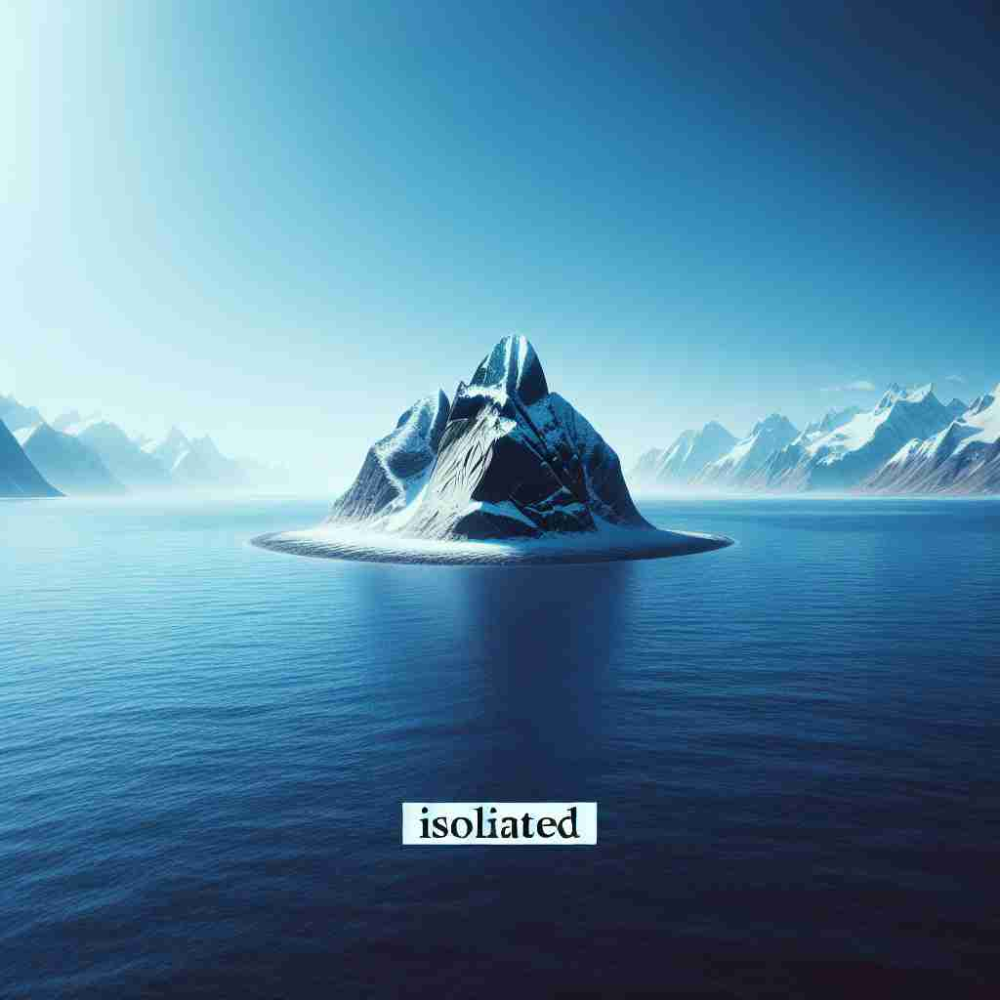

💬 The isolated iceberg floats in the ocean. 孤立的冰山漂浮在海洋中。
💬 The isolated tree stands alone in the water. 孤零零的树木独自矗立在水中。

💬 The isolated cabin is surrounded by beautiful mountains. 这间孤立的小屋被美丽的山脉环绕。
💬 The isolated lighthouse warns ships of the dangerous rocks nearby. 孤立的灯塔警告船只附近的危险礁石。
🧠 核心含义是'分离'或'隔离'。想象一个孤岛，它与其他陆地分离。这种物理上的分离可以扩展到社交、情感和时间上的分离。在科学中，它也指将某物单独分离出来进行研究。通过这个'分离'的核心概念，你可以更容易理解和记忆 'isolated' 的各种用法。
🔈 ['aɪsəleɪtɪd]
🗝️ adj. separated from other people or things and not connected to them 与其他人或事物分开并且不与它们相连
🎭 在一个偏远的小岛上，一栋孤立的灯塔伫立在悬崖边。远离城市的喧嚣，这座灯塔与周围的一切隔绝，象征着 'isolated' 的本质：与他人或事物分离且不连通。
💬 The house was in an isolated area, far from any other buildings. 这栋房子位于一个偏僻的地区，远离其他建筑。
🌳 由基本词 "isolate"（隔离）加上形容词后缀 "-ed" 组成，意味着 "被隔离的，孤立的"。
🕸️ 1.isolate: 隔离 2.insular: 孤立的 3.isolation: 隔离状态
💡 可以联想 "isolated" 为 "island" 的概念，一个与外界隔绝的小岛，从而帮助记住 "孤立的" 这一含义。